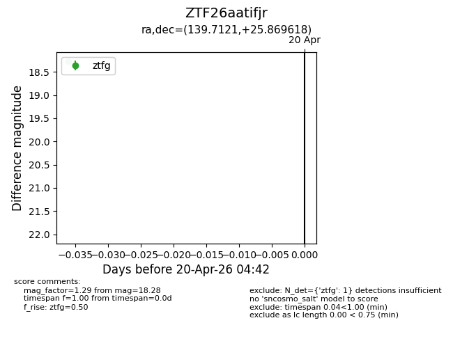
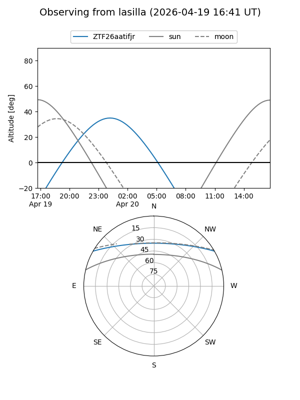
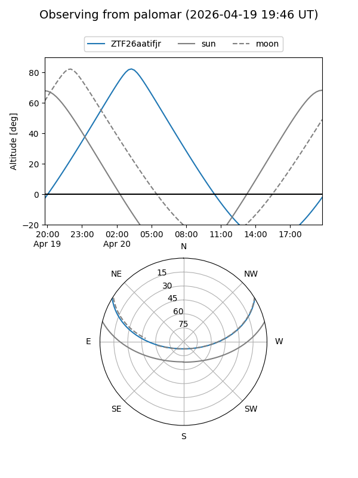

ZTF26aatifjr
Target ZTF26aatifjr at 2026-04-20 04:52
Aliases and brokers:
FINK: link
Lasair: link
ALeRCE: link
alt names
ZTF26aatifjr (ztf,fink_ztf)
Coordinates:
equatorial (ra, dec) = 139.7121,+25.86962
equatorial (HMS+DMS) = 09:18:50.90,+25:52:10.62
galactic (l, b) = (201.7559,+42.78464)
Flags:
Photometry:
last ztfg=18.28
1 ztfg detections
Lightcurve

Visibility


Additional plots